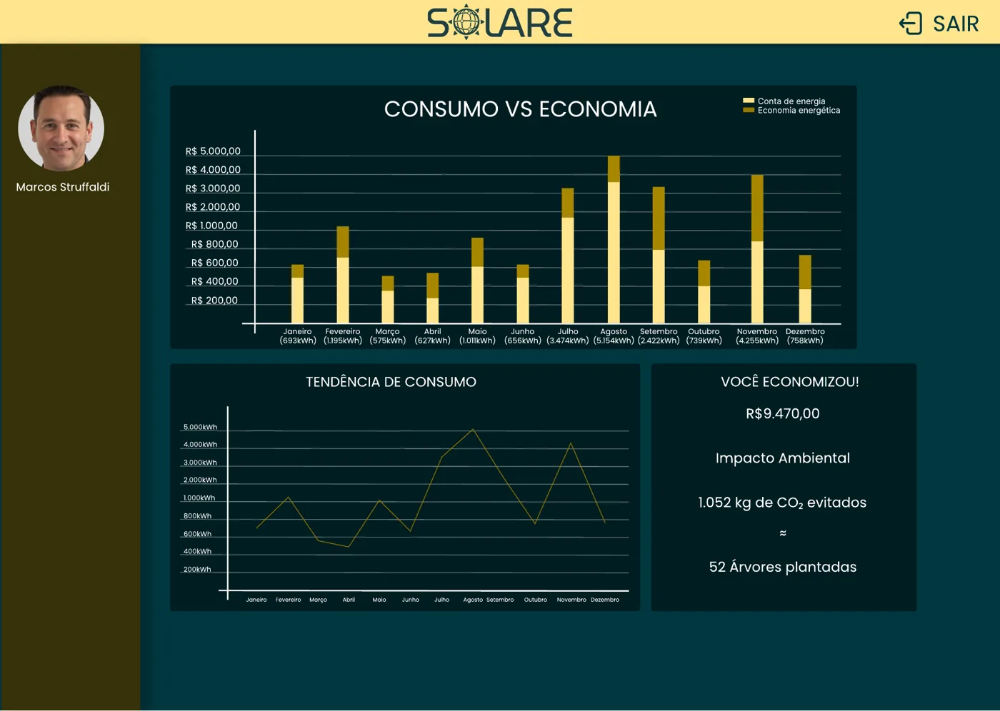

sistemas de geração distribuída solar no Brasil*
SOLARE
União, Estratégia e Economia
Energia solar que se transforma em economia compartilhada.
A Solare conecta produtores e consumidores de energia solar por meio de cooperativas, facilitando o compartilhamento de créditos energéticos com transparência, praticidade e impacto sustentável.
EconomiaRedução de custos
ConexãoProdutores e consumidores
ODS 7Energia limpa
Dashboard do protótipo
solare.app/dashboard

↘
Economia visívelAcompanhamento mensal
☀
Energia limpaImpacto monitorado
requisitos funcionais previstos no sistema
perfis beneficiados: produtores, cooperativas e consumidores
energia limpa e acessível para todos
* Dado da ABSOLAR atualizado em 13/05/2026.
02 • Problema
Energia disponível, mas acesso e aproveitamento ainda limitados
A geração solar distribuída cresce no Brasil, porém nem todos conseguem investir em painéis solares. Ao mesmo tempo, produtores precisam de meios digitais claros para organizar cooperativas, administrar créditos e demonstrar economia aos participantes.
Mais de 4,37 milhões de sistemas de geração distribuída
O avanço da energia solar evidencia uma oportunidade: aproximar quem gera energia de quem deseja economizar sem instalar painéis próprios.
Fonte: ABSOLAR, 13/05/2026 ↗Consumidor sem placas
Não dispõe de investimento inicial ou estrutura para produzir energia solar em sua residência.
Produtor com créditos
Precisa aproveitar e administrar créditos excedentes com mais transparência e alcance.
Gestão complexa
Participação, cobrança e acompanhamento de consumo precisam estar organizados em um único ambiente.
Baixa visibilidade
Sem dashboards, o usuário tem dificuldade de perceber economia, consumo e impacto ambiental.
03 • Solução proposta
Uma plataforma para compartilhar energia com clareza e controle
A Solare organiza a jornada entre produtor e consumidor: cadastro, escolha de cooperativas, vínculo do participante, cobrança mensal e acompanhamento por dashboards.
- Proposta de valor: democratizar o acesso à economia gerada pela energia solar.
- Diferencial: conectar cooperativas, créditos e indicadores em uma interface única.
- Benefício: apoiar decisões com visualização de consumo, economia e sustentabilidade.
Fluxo principalSolare
01
Produtor cadastra a cooperativaOferta organizada de créditos energéticos
02
Consumidor escolhe e participaAdesão prática e centralizada
03
Sistema acompanha resultadosEconomia, consumo e impacto visualizados
04 • Funcionalidades
Recursos previstos para o MVP
Funcionalidades alinhadas aos requisitos funcionais definidos pela equipe.
Cadastro de usuário
Criação de conta para produtores e consumidores iniciarem sua jornada.
Benefício: acesso personalizadoCadastro de cooperativa
Produtores publicam cooperativas disponíveis para participação.
Benefício: ampliar alcanceBusca e adesão
Consumidores visualizam cooperativas e solicitam participação.
Benefício: adesão simplificadaCobrança mensal
Registro organizado da mensalidade dos participantes ativos.
Benefício: controle financeiroDashboard consumidor
Acompanhamento de consumo e créditos recebidos em visualizações objetivas.
Benefício: transparênciaDashboard produtor
Monitoramento de geração, distribuição e aproveitamento da energia.
Benefício: gestão eficienteValidação documental
Possibilidade de verificação de identidade e documentos dos usuários.
Benefício: confiançaImpacto ambiental
Indicadores visuais conectam economia e benefícios sustentáveis.
Benefício: consciência energética
05 • Tecnologias utilizadas
Stack planejada e ferramentas de criação
06 • Arquitetura da solução
Componentes conectados para uma experiência segura
Arquitetura em camadas sugerida a partir das tecnologias documentadas para o sistema.
UsuáriosProdutor • Consumidor
→
Interface WebHTML • CSS • JavaScript
→
API / BackendJava 21 • Spring Boot
→
Banco de DadosSQL Server 2022
ValidaçãoDocumentos e autenticação
Fluxo: o usuário acessa a interface, autentica-se, consulta ou administra cooperativas e os dados são tratados pelo backend e armazenados de forma estruturada.
Segurança planejada: autenticação, autorização e proteção de dados sensíveis nas funcionalidades restritas.
07 • UX/UI e protótipo
Telas criadas no Figma
A identidade visual utiliza azul-petróleo e amarelo solar para comunicar tecnologia, confiança e energia.
08 • Público-alvo e personas
Quem se beneficia da Solare
Perfis identificados no projeto para uso em cidades brasileiras com disponibilidade de energia solar.
Gestor de geração solar
Busca administrar cooperativas, distribuir créditos e ampliar a rentabilidade da geração.
- Precisa de gestão centralizada
- Deseja acompanhar distribuição
Pequeno produtor
Possui painéis solares e quer aproveitar melhor os créditos excedentes da própria geração.
- Busca acelerar retorno
- Valoriza simplicidade
Usuário sem painéis
Deseja reduzir gastos com energia sem realizar instalação ou manutenção de placas solares.
- Quer economia acessível
- Precisa de transparência
09 • Resultados esperados
Impacto mensurável para a experiência do usuário
O projeto define metas de usabilidade, desempenho e confiabilidade que deverão orientar os testes e a evolução da solução.
Indicadores abaixo são metas previstas no documento do projeto, e não resultados já medidos.
ODS7
10 • ODS relacionado
Energia limpa e acessível
O Solare está alinhado ao ODS 7 ao propor uma plataforma digital que favorece o acesso a fontes de energia renovável, aproxima produtores e consumidores e estimula o uso consciente da energia solar.
Conheça o ODS 7 na ONU Brasil ↗
11 • Equipe
Grupo Helios
Equipe responsável pelo projeto Solare — versão 2.3.
AM
Arthur Marcolino
Developer Backend
RA 252369ES
Emelly Souza Oliveira
Scrum Master
RA 252220FT
Felipe Matheus Vieira Tota
Product Owner
RA 251964RE
Rhyan Ely Silva e Costa
Developer Frontend
RA 251819Orientador: Daniel Ohata
12 • Demonstração
Walkthrough do protótipo
Explore as principais telas planejadas para a jornada do usuário no sistema.
Conheça a proposta e inicie a economia com energia compartilhada.
Vídeo pitch
Veja a apresentação do projeto Solare
Assista ao vídeo demonstrativo da solução e conheça a proposta da plataforma.
Assistir no YouTube ↗
13 • Documentação
Materiais do projeto
Arquivos disponíveis e espaços preparados para os links oficiais da equipe.
Documentação do Projeto
Requisitos e planejamento — versão 2.3
Protótipo Visual
Telas de referência desenvolvidas no Figma
GitHub — LyraAldebaran/UPX-III
Repositório oficial do Projeto UPX
Vídeo Pitch Solare
Apresentação do projeto no YouTube
Helios Tech — Solare
Quadro do projeto • URL não informada
UPX III — Google Drive
Pasta compartilhada • URL não informada
Compartilhe a landing page
Após publicar no GitHub Pages, este QR Code direcionará ao endereço online da página.